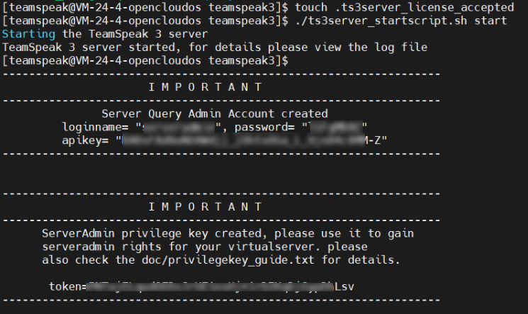

搭建TeamSpeak服务器
搭建TeamSpeak服务器
需要一台长时间开机以及拥有公网 IP 的电脑，因为没有公网 IP，所以这里就购买了云服务器进行搭建，经过价格对比最终选择了[腾讯云](腾讯云 产业智变·云启未来 - 腾讯 (tencent.com))服务器，初次购买优惠一年 79 元，2 核 2 G、系统盘 50 G、流量包 300 GB/月、带宽 4 Mbps。
Linux 环境安装服务器
准备工作
考虑到安全性，这里新建一个用户存放服务器文件：
1 | useradd teamspeak |
下载和解压压缩包
1 | wget https://files.teamspeak-services.com/releases/server/3.13.7/teamspeak3-server_linux_amd64-3.13.7.tar.bz2 |
修改下目录名
1 | mv teamspeak3-server_linux_amd64-3.13.7 teamspeak3 |
赋予目录给新建的用户权限
1 | chown -R teamspeak:teamspeak teamspeak3 |
同意许可条款
1 | touch .ts3server_license_accepted |
数据库配置，TeamSpeak 默认使用 SQLite，执行以下操作自动配置并启动服务器
1 | ./ts3server_startscript.sh start |
打印信息，保存 token 和 管理员账号和密码。

设置自启动
创建并编辑文件：/lib/systemd/system/teamspeak.service
1 | vi /lib/systemd/system/teamspeak.service |
添加内容：
1 | [Unit] |
- User和 Group 为前面设置的用户及用户所在组。
- WorkingDirectory：工作目录
- ExecStart：启动命令
- ExecStop：接收命令
- 目录路径必须修改为直接服务器文件存放位置
重新加载 systemd：
1 | systemctl daemon-reload |
开启自启动：
1 | systemctl enable teamspeak.service |
启动 TeamSpeak：
1 | systemctl start teamspeak.service |
停止 TeamSpeak：
1 | systemctl stop teamspeak.service |
重启TeamSpeak：
1 | systemctl restart teamspeak.service |
移植服务器
移植前先保存必要文件，然后在新的服务器重新安装 ts 服务器将文件放到目录下并重新添加 license 许可证就可以正常使用了。
重要文件
查询接口的白名单 IP：query_ip_allowlist.txt
查询接口的黑名单 IP：query_ip_denylist.txt
数据库：ts3server.sqlitedb
密钥：ssh_host_rsa_key
1 | mv query_ip_* ts3server.sqlitedb ssh_host_rsa_key 服务器目录下 |
如果要频道有图标或文件，则需要保存 file 目录。
若有配置 tsdns，则还需要保存 tsdns/tsdns_settings.ini。
TSAudioboot
直接使用 linux 搭建后，wyy api 用不了，改成 docker 目前可以正常使用。
初始化生成配置文件：
1 | sudo docker run --rm --mount type=bind,source="$(pwd)/data",target=/app/data -it ancieque/ts3audiobot:0.12.0 |
运行启动，必须添加映射端口 58913，否则网页打不开。
1 | sudo docker run --name ts3audiobot -d -p 58913:58913 --mount type=bind,source="$(pwd)/data",target=/app/data ancieque/ts3audiobot:0.12.0 |
TSAudioboot 四个重要配置文件
- ts3audiobot.db：bot 的数据库。
- ts3audiobot.toml：配置文件，里面有 web 的网页配置信息。
- rights.toml：用户权限参数设置，在 userid 添加自己的 uid。
- bot/default/bot.toml：存放 bot 连接的服务器和频道信息。
bot/default/bot.toml 需要自己创建，添加一下内容（权限需要改为 docker 用户）：添加服务器地址和密码
1 | Starts the instance when the TS3AudioBot is launched. |
可以打开网页手动添加本地音乐，这里使用的是 docker，所以添加时需要是 docker 的目录。
例如我宿主机本地目录为 /home/teamspeak/ts3AudioBot/data，挂载 docker 容器的目录为 /app/data，所以将在本地目录创建 music 目录后，在 docker 容器下的目录应该为 /app/data/music，eg：
1 | 宿主机目录：/home/teamspeak/ts3AudioBot/data/music/test.mp3 |
使用脚本批量添加音乐（还未尝试）：
WYY API
列出当前 plugin 和加载 plugin。
1 | !plugin list |
命令使用方法：
接口解析：
插件 windows 版本的，里面分支有 linux 版本的，出现问题看一下 tissue。
linux 版本的：
linux 命令 & docker
在搭建的时候，经常需要查看端口是否开放，使用 netstat 命令。
1 | // t:tcp u:tdp l:表示仅显示监听的端口 n:数字形式显示端口号 |
docker run 创建并启动容器
当使用 docker run 命令时，除了常见参数 -d（后台运行）和 -p（端口映射）之外，还有一些其他常用参数：
- -v：挂载主机目录到容器内部，用于数据持久化。
- -e：设置容器内的环境变量。
- –name：为容器指定一个自定义的名称。
- -i：启动一个交互式容器。
- -t：为容器分配一个伪终端。
- –restart：指定容器退出时的重启策略。
- –network：指定容器所属的网络模式。
- –link：链接另一个容器。
docker start 启动容器
1 | docker start 容器名 |
docker stop 停止容器
1 | docker stop 容器名 |
docker restart 重启容器
1 | docker restart 容器名 |
docker rm 删除容器
1 | docker rm 容器名 |
docker logs 查看容器日志
1 | docker logs 容器名 |
docker images 查看已下载的 docker 镜像
1 | docker images |
进入 docker 容器的目录：
1 | docker exec -it 容器名 /bin/bash |
【Docker】初学者 Docker 基础操作指南：从拉取镜像到运行、停止、删除容器_docker停止一个镜像的拉取-CSDN博客
设置docker以及容器开机自启动
docker
docker 设置开机启动
1 | sudo systemctl enable docker.service |
docker 关闭开机启动
1 | sudo systemctl disable docker.service |
重新设置 docker 在系统中的自启动：
1 | sudo systemctl reenable docker.service |
容器
创建时设置自启动在 docker run 中添加选项 --restart=always
如果已经创建的容器，则使用 update 命令进行更新：
1 | docker update --restart=always 容器名或者id |
取消容器开机自启动：
1 | docker update --restart=no 容器名或者id |